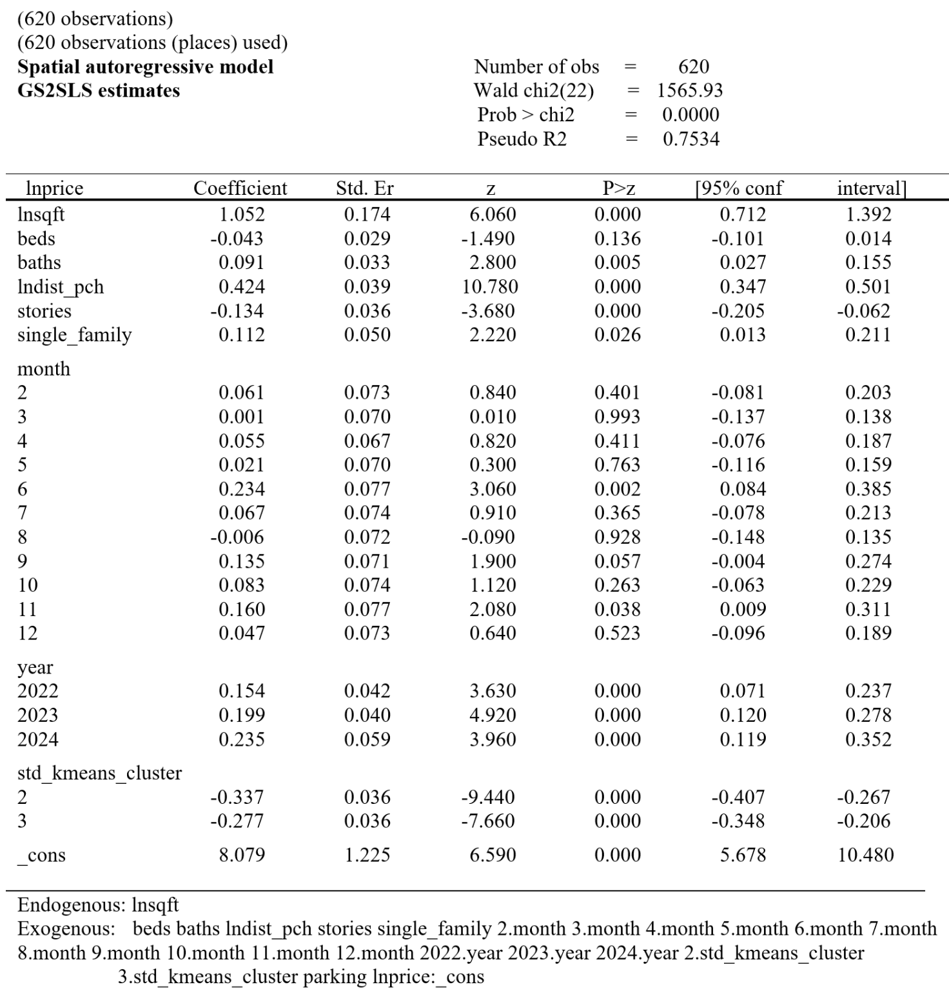
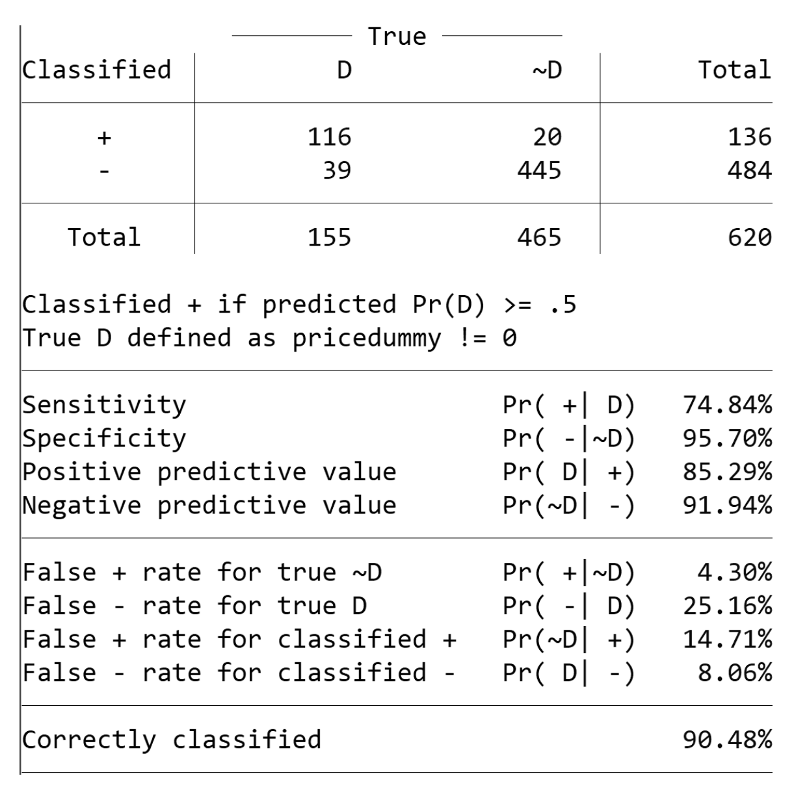

← Back to Projects


Project Report
Spatial Housing Pricing: Structure + Location + Spillovers
A quant-style spatial econometrics build that separates structural value (sqft, baths), micro-location (distance to PCH), and spatial spillovers using clustering, spatial autoregression (GS2SLS), and classification.
Executive Summary
- Spatial structure is real: transactions cluster into distinct micro-markets.
- Distance matters after correction: dist_pch becomes strongly significant in spatial models.
- Do not trust naïve inference: spatial dependence changes coefficients and significance.
- Classification is high-signal: logit reaches 90.48% accuracy on high-price detection.
Key numbers
N (transactions)
620
Cross-sectional with time controls (month/year).
Spatial model fit
Pseudo R² = 0.753
GS2SLS spatial autoregressive model.
Fixed effects fit
R² = 0.891
Absorbing cluster indicators materially improves fit.
Logit accuracy
90.48%
Sensitivity 74.84%, specificity 95.70%.
Metrics shown to compare modeling layers; focus is inference quality under spatial structure.
Pipeline
-
1
Data + target620 transactions; model ln(price) using structural features + time controls + spatial covariates.
-
2
Spatial representationLatitude/longitude + distance to PCH; clustering used to detect micro-markets.
-
3
Spatial econometricsGS2SLS spatial autoregressive model to correct for spatial dependence and spillovers.
-
4
IV layerInstrumenting endogenous structure (sqft) to reduce bias and stabilize inference.
-
5
Classification layerLogit model predicts high-price outcomes; confusion matrix used to evaluate error profile.
-
6
DiagnosticsResidual checks for misspecification and tail behavior.
Results (selected visuals)
Spatial distribution of transactions
Figure 1
Transactions are not uniformly distributed; distinct micro-markets emerge geographically.
Micro-market separation (latitude vs longitude)
Figure 2
Clear spatial clustering motivates cluster controls and spatial dependence correction.
Cluster-level price dispersion (K-means)
Figure 3
Clusters show distinct medians and variance profiles, implying heterogeneous price formation.
Spatial autoregressive model (GS2SLS)
Figure 4

After spatial correction, distance-to-PCH becomes highly significant, consistent with location-driven pricing.
Logit model + error profile
Figure 5

90.48% correctly classified. High specificity (95.70%) with moderate sensitivity (74.84%).
Fixed effects + residual diagnostics
Figure 6
Residual behavior is broadly stable with mild dispersion changes at the upper tail, suggesting limited nonlinear structure.
Interpretation
- Spatial correction changes inference: ignoring dependence can understate location effects.
- Micro-markets matter: clustering captures structural heterogeneity that global averages blur.
- Classification adds signal: the logit model is useful for “tail” outcomes (high-price detection).
Limitations and next steps
- Cross-sectional scope: results reflect a 2021–2024 window; dynamics could shift across regimes.
- Model extension: test alternative spatial weight matrices and nonlinear models for the upper tail.
- Feature enrichment: add ocean proximity, school zones, view indicators, and renovation proxies if available.